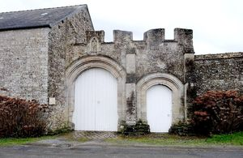
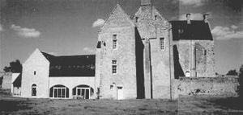
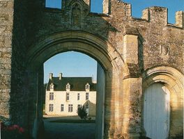
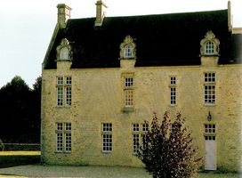
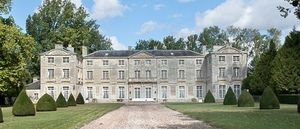
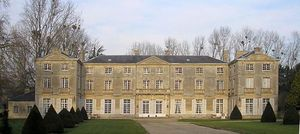

Recensement Jean-Claude Truffet
| Département | 14 — Calvados |
| Canton | Bayeux |
| Commune | Vaux sur Seulle |
| Type d'édifice | Château |
| Période d'origine | XV-XVI-XVIII |
| Coordonnées GPS | 49° 16' 6,24" Nord, 0° 37' 26,04" Ouest |






Trois châteaux dans cet article St-Clair, Vaussieux et Vaux. St-CLAIR, du XVe siècle de Gervais de Larchamp chanoine du chapitre de Bayeux, en 1438 passe aux Grimouville leur descendance le conserveront jusqu'à la Révolution, acquis en 1970 par ses propriétaires actuels les Alexandre. St-Clair à conserve ses éléments fortifiés, occupe une cour carrée entourée de bâtiments et haut murs, les portes subsistent des vestiges d'un escalier à vis qui permettait d'accéder à un chemin de ronde dont-il reste une plate forme crénelée. Le bâtiment se compose de deux corps disposées en équerre, le toit reposant sur deux pignons et chevauché par trois lucarnes ornés de volutes, dans le prolongement de cette façade, à droite un bâtiment récent à permis d'agrandir l'habitation, un corps en retour possède sur l'une de ses faces latérales une lucarne. VAUX, ceinturé de douves, occupe lemplacement dune ancienne place forte construite en 1345 avec lautorisation du Roi, par Jean de Creully dit de Villers. Propriété de la famille dÉcajeul aux XVe et XVIe siècle, le domaine passe aux le Bedey, sieurs de la Fosse et vicomtes de Bayeux. Il fut reconstruit par Jacques Le Bedey ou son fils Olivier. Le château, précédé dune cour entourée de communs, présente une toiture à la Mansart et délégantes lucarnes.
VAUSSIEUX, date de la fin du XVIIIe siècle. Un premier château, édifié, en 1345, pour Jean de Creully, dit de Villers, Il fut reconstruit une première fois dans le style Henri IV. Il subsiste de cette première reconstruction une partie des communs. En 1413 Germaine de Larchamps acquit de Catherine de la Luzerne la seigneurie, qui passa par mariage aux Grimonville. Les Thiout en firent l'acquisition en 1605. Mme de Thiout la légua à son neveu d'Hérécy. Reconstruit une seconde fois, en 1771, pour le marquis d'Héricy, ce vaste château devint, en septembre 1778, le quartier général du camp militaire de Vaussieux. Le commandement supérieur du camp fut confié, par Louis XVI, au général Victor-François de Broglie, vétéran de la guerre de Sept Ans, ami du marquis d'Héricy. Le château se présente sous la forme d'un long bâtiment avec un pavillon central, et de deux ailes en avant-corps. Le pavillon est orné d'un balcon surmonté d'un fronton orné de sculptures de style Louis XVI et arborant des armes parlantes où figurent 3 hérissons. Au XIXe siècle passa aux Fournès, puis aux Charmel, vendu pendant la guerre occupé par une colonie de Vacances, à été récemment acquis par M.Huntington-Wilson. Les écuries, incendiées en 1866, ont été reconstruite, dans un style néo-normand. Éléments protégés MH : les façades et les toitures du château, inscription par arrêté du 16 juillet 1970.
St-Clair; les Alexandre Vaux; famille dÉcajeul et Jacques Le Bedey . Vaussieux: marquis d'Héricy
"
Trois châteaux dans cet article St-Clair grav-1-2-3-4, Vaussieux grav 5-6
gps 49° 16' 06" N, 0° 37' 26" Ouest et Vaux. Vaux GPS : 49° 16' 6,24" Nord, 0° 37' 26,04" Ouest